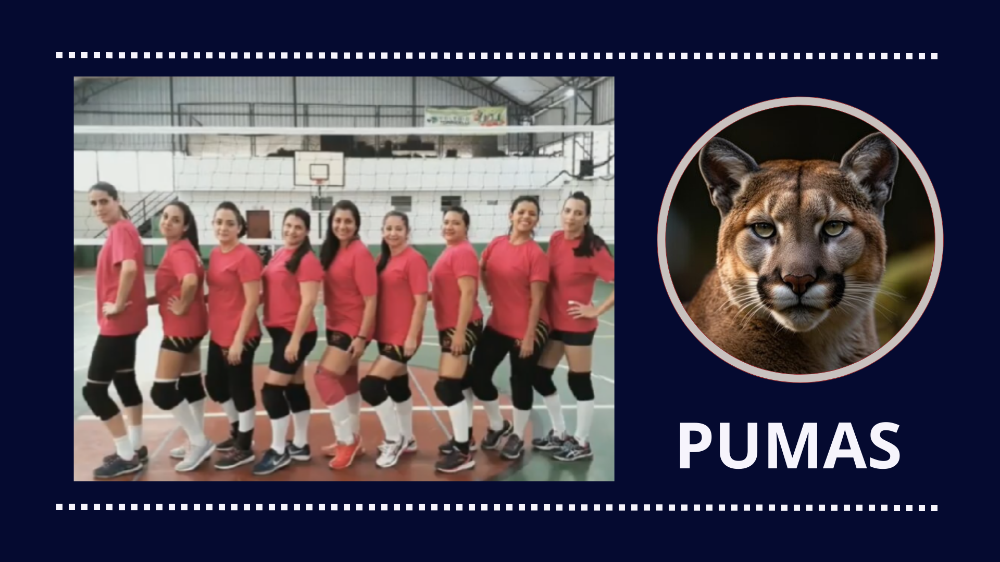
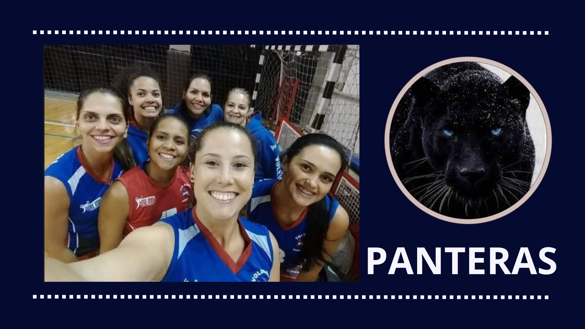
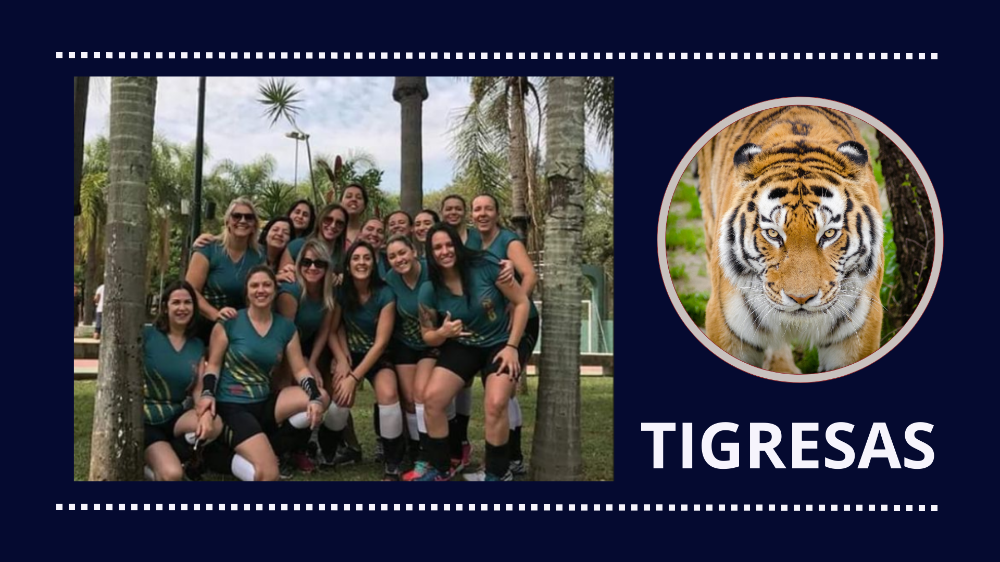

Times Avog:
As Onças é um time de vôlei feminino composto por 18 jogadoras talentosas. Liderada pela capitã e levantadora Bruna Ferreira, a equipe se destaca pela força coletiva e estratégia. Mariana Costa é a principal atacante, enquanto as ponteiras Ana Paula Nunes, Renata Souza e Tatiana Lopes garantem equilíbrio entre ataque e defesa. As centrais Gabriela Martins, Fernanda Alves, Juliana Ribeiro e Carolina Duarte dominam a rede com bloqueios fortes. Na defesa, as líberos Camila Lima e Sofia Antunes protegem o time com agilidade. As levantadoras reservas Luiza Moreira e Viviane Campos, junto com jogadoras versáteis como Raquel Faria, Marcela Duarte e Elisa Moura, completam o elenco. Unidas, as Onças são conhecidas por sua garra e determinação em quadra.
As Pumas é um time de vôlei feminino composto por nove jogadoras talentosas, cada uma com habilidades únicas que tornam a equipe forte e competitiva. A capitã Carolina Mendes lidera o time com visão estratégica, enquanto Larissa Albuquerque, a oposta, é temida por seus ataques poderosos. Bianca Silva e Natália Costa brilham como ponteiras, equilibrando ataque e recepção, e as centrais Ana Paula Farias e Juliana Reis dominam a rede com bloqueios eficientes. Mariana Rocha, a líbero, é a defensora ágil, enquanto Isabela Duarte e Fernanda Nunes, jovens promessas, contribuem em diversas áreas. Juntas, elas formam um time unido e dedicado à busca pela excelência no vôlei.
As Panteras é um time de vôlei feminino composto por sete jogadoras talentosas. Liderada pela levantadora Patrícia Oliveira, o time se destaca pela agilidade e estratégia. Carla Mendes, a oposta, é a principal atacante, enquanto as ponteiras Luciana Costa e Viviane Souza equilibram ataque e defesa. As bloqueadoras Fernanda Lima e Raquel Santos garantem uma defesa sólida na rede, e a líbero Juliana Freitas protege a retaguarda com agilidade. Unidas, as Panteras são conhecidas pela garra e determinação em quadra.
O Tigresas é um time de vôlei feminino composto por 16 jogadoras talentosas e dedicadas. Liderada pela capitã e levantadora Camila Rodrigues, a equipe se destaca pela força coletiva e habilidades individuais. Renata Oliveira é a principal atacante, com o apoio das ponteiras Beatriz Santos e Sofia Almeida, e das jovens promessas Mariana Lima e Larissa Costa. No centro, Luiza Martins, Gabriela Souza e Fernanda Nogueira formam uma defesa sólida. A líbero Paula Lima, junto com Isadora Ferreira, lidera a defesa. As levantadoras reservas Juliana Barros e Raquel Menezes, além de Ana Clara Monteiro, Tatiane Campos e Isabela Duarte, completam o time, sempre prontas para contribuir em qualquer situação. Unidas, as Tigresas são conhecidas pela resiliência e determinação.